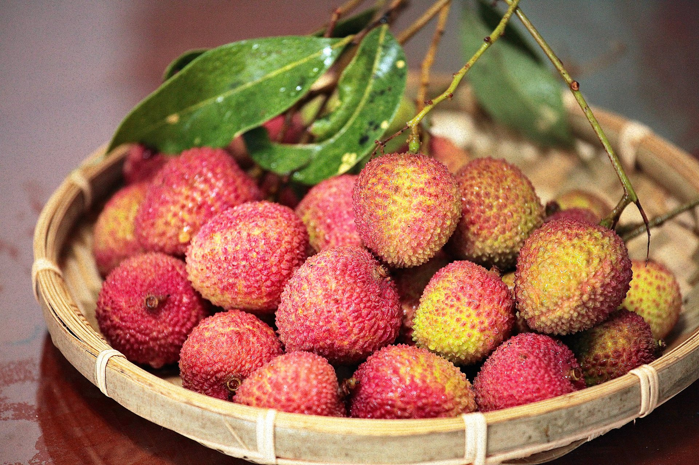
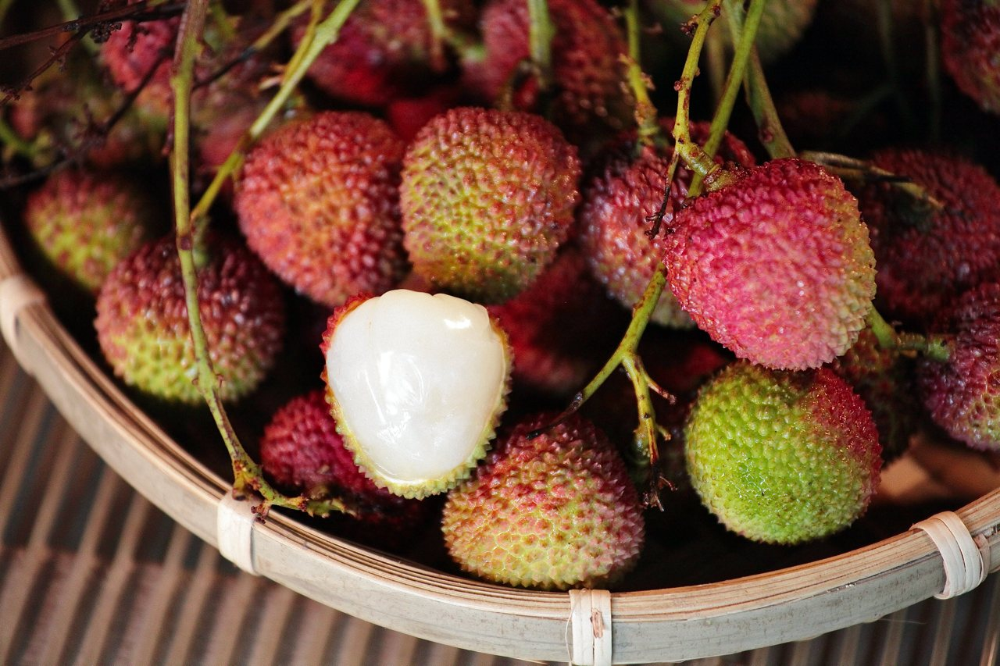

我最喜歡的水果荔枝
台灣是荔枝「天選之地」？
荔枝是亞熱帶常綠果樹，要生長良好需穩定高溫和日照，又需涼溫刺激才能產出果實，全世界僅南北回歸線之間的特定地區符合條件，適合生產的國家不多，台灣為能規模栽種荔枝可謂「天選之地」。

荔枝「果肉」白嫩，但大家都誤會了？
荔枝白白水嫩的「果肉」人人愛，其實它是「假種皮」，也就是「種子的外衣」！
荔枝的假種皮又稱為種衣，是附在種子外層的構造，但膨大為多汁的果肉，以吸引動物取食。
不僅是荔枝，龍眼、榴槤、百香果等水果食用部位也都是假種皮。

荔枝深受歡迎，然而栽種面積與產量都逐年減少？
荔枝近年產量更加不穩，氣候變化恐怕是元兇。荔枝與龍眼需經過一段氣溫低於 20℃ 的涼溫，植株才會分化花芽。近年台灣冬季涼溫不夠低或不穩定，不利荔枝長出花序。
另外冬雨會減少荔枝開花量，花季遇到降雨亦會增加落花、阻礙蜜蜂協助授粉。因荔枝花序分雄花與雌花，開花通常會錯開，沒有蜜蜂「作媒」，荔枝結果率會明顯降低。
資料來源: